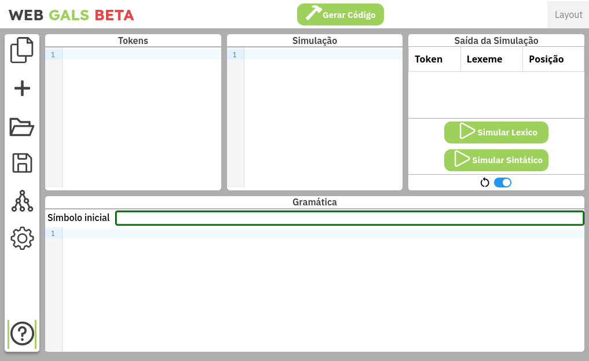
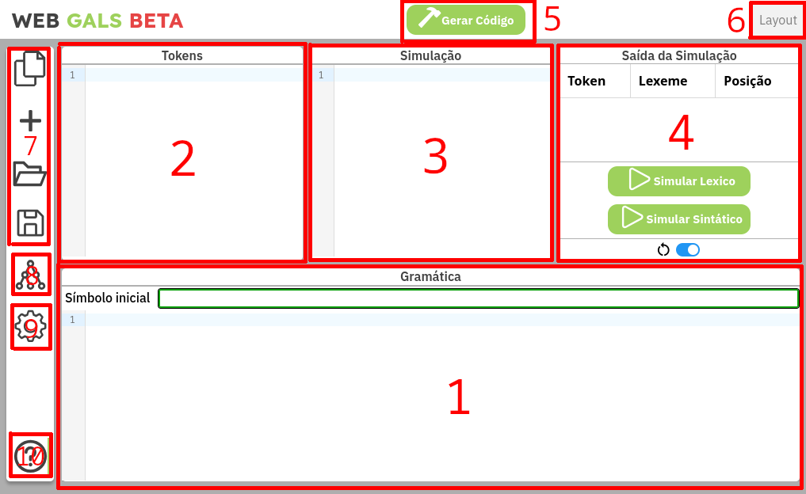
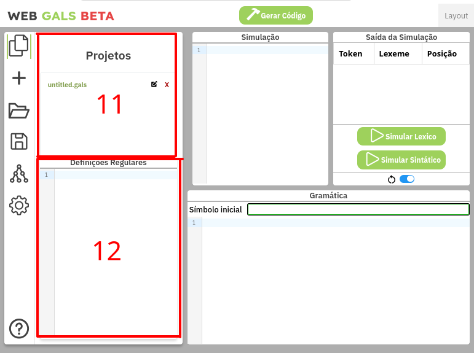
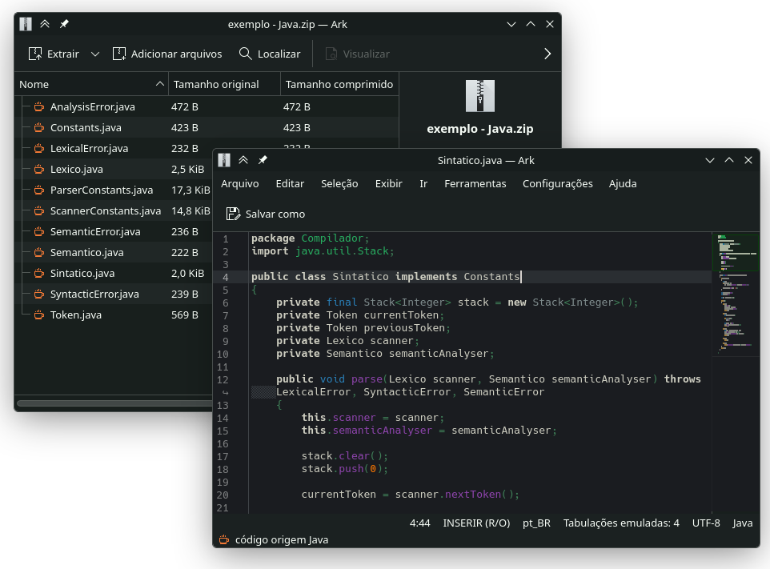
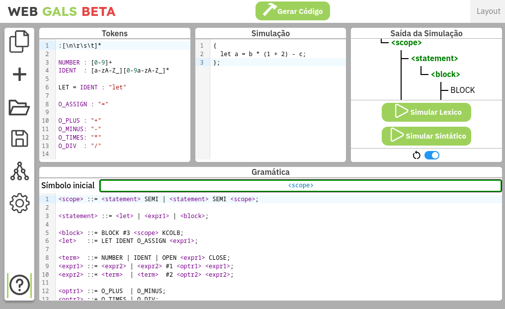
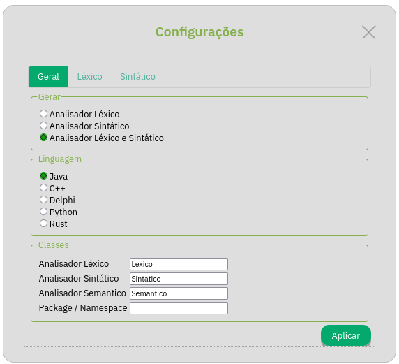
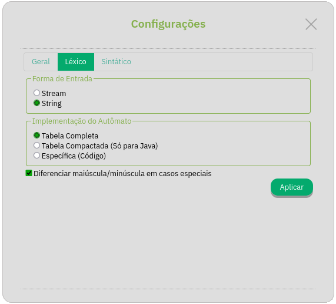
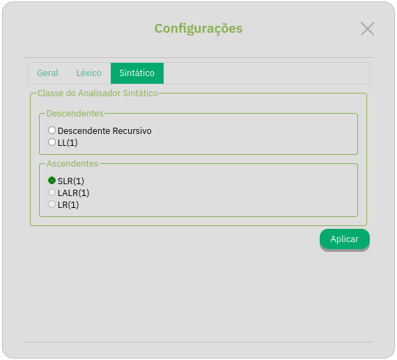

Introdução
O (Web) GALS é um ambiente para a geração de analisadores léxicos e sintáticos, originalmente desenvolvido por Carlos Eduardo Gesser como trabalho de conclusão de curso do Curso de Bacharelado em Ciências da Computação, da Universidade Federal de Santa Catarina, sendo desenvolvido sob a orientação do Prof. Olinto José Varela Furtado. Posteriormente, este projeto foi ampliado na forma do Web GALS, também no formato de trabalho de conclusão de curso de Ciências da Computação, pelos alunos Daniel Akira Nakamura Gullich e Vinícius Schütz Piva, ambos orientados pelo Prof. Eduardo Alves da Silva, na Universidade do Vale do Itajaí.
Esta ferramenta pode ser usada em https://lia-univali.github.io/Web-GALS/ (v2024) e https://vsczpv.github.io/Web-GALS/ (v2026).
O Web GALS é uma ferramenta de Software Livre. Seu código fonte é liberado sob a Licença Publica GNU. (http://www.gnu.org/)
Note
A versão antiga da documentação está disponível em https://lia-univali.github.io/Web-GALS/files/help.html
Uso Geral
O Web GALS apresenta uma área de trabalho com quatro janelas, um gerenciador de projetos e um menu de configurações.

De modo geral, usa-se as janelas para definir-se as regras de lexação e análise sintática da linguagem a ser projetada, com definições mais específicas como algorítmos de escolha ou linguagem de implementação sendo escolhidas via o menu de configurações.


Especificamente, a interface principal do Web GALS consiste de:
- Área da Gramática: Nesta área de texto é escrito as regras gramáticais da linguagem sendo projetada. Acima do editor há um campo para especificar o símbolo inicial da linguagem.
- Área dos Tokens: Nesta área de texto é escrito os Tokens reconhecidos pelo scanner e suas regras de lexação.
- Área da Simulação: Nesta área de texto é escrito um programa de exemplo, que será analisado pelo simulador segundo as regras descritas nas duas áreas anteriores.
- Saída da Simulação: Nesta área é mostrado a saída de tanto o scanner léxico (lista de Tokens) quanto do analísador sintático (árvore de derivação), dependendo da escolha do usuário.
- Botão de gerar código: Este botão, após clicá-lo, o Web GALS irá gerar um código fonte de compilador da linguagem projetada.
- Diálogo de Layout: Este dialogo permite o usuário mudar o layout da área de trabalho do Web GALS.
- Gerenciador de Projetos: Este quatro botões, junto ao seu tray, permitem o usuário gerenciar múltiplos projetos ao mesmo tempo.
- Visualizador de Constantes: Este botão abre um tray que oferece várias opções de visualização quanto as constantes internas dos analisadores gerados.
- Menu de Configurações: Este é o botão do menu de configurações do projeto.
- Informações do Web GALS: Este botão abre um tray que mostra informações sobre Web GALS.
- Aba de Projetos: A aba onde é possível ver os seu projetos em andamento.
- Área de Definições Regulares: Nesta área de texto é escrito as definições regulares.
Após finalizar um projeto no Web GALS, é possível gerar um código template que implementa um compilador que processa a linguagem projetada; tal serve de ponto de partida para a analise semântica, implementada pelo usuário em código.

Tendo de exemplo o seguinte arquivo de projeto, com a seguinte entrada de simulação, o estado do Web GALS se encontra como no da figura:
#![allow(unused)]
fn main() {
{
let a = b * (1 + 2) - c;
};
}
Opções
O Web GALS oferece uma gama de opções quanto a configuração do projeto. Estas estão apresentadas em três abas, no menu de configurações acessível na barra lateral esquerda da interface.
Opções Gerais
O dialogo de configurações gerais permite o usuário escolher o quê será gerado e em qual linguagem, junto a escolhas de nomeamento.

Modal - Gerar
Estas opções permitem ao usuário escolher quais partes do compilador devem ser geradas, tendo como opção:
- Analisador Léxico: Será gerado somente o analisador léxico.
- Analisador Sintático: Será gerado somente o analisador sintático.
- Analisadores Léxico e Sintático: Serão gerado ambos.
Note
Para o caso de somente gerar o analisador sintático, o usuário tera que implementar manualmente uma forma de fornecer Tokens ao analisador sintático.
Modal - Linguagem
Estas opções permitem o usuário escolher a linguagem de implementação do compilador gerado, tendo como opção:
- Java
- C++
- Delphi
- Python
- Rust (Não Finalizado)
Warning
A implementação em linguagem Delphi não tem suporte para todas as funcionalidades providas pelo Web GALS.
Entrada - Classes
Estas opções permitem o usuário escolher o nome das classes e da hierarquía do código gerado.
- Analisador Léxico
- Analisador Sintático
- Analisador Semântico
- Package / Namespace / Module
Para Java e C++ pode-se especificar a package e o namespace respectivamente onde serão geradas as classes. Para Python e Rust é possível especificar o module das classes, onde é criado a hierarquía de diretórios correspondente.
Note
Não foi implementado para Delphi suporte para o sistema de nomeamento e hierarquia.
Opções do Analisador Léxico
O diálogo de opções do analisador léxico permite o usuário configurar a geração do mesmo, provendo dois modais de configuração.

Modal - Forma de Entrada
- Stream: Esta opção faz com que o Lexer seja implementado com o equivalente de uma Stream contínua. Streams carregam contínuamente a sua entrada ao invéz de tudo de uma véz só, e são propícios para a leitura de arquivos em disco, por exemplo.
- String: Esta opção faz com que o Lexer seja implementado com o equivalente de uma String de tamanho fixo e conhecido. Esta é a opção de mais simples implementação, porém terá dificuldades em carregar arquivos muito grandes devido a necessidade de manter todo o arquivo em memória; é porém proprícia para editores interativos, por exemplo.
Quanto a implementação desses sistemas, segue a tabela de classes:
| Linguagem | Forma de Entrada | Classe |
|---|---|---|
| Java | Stream | java.io.Reader |
| C++ | Stream | std::istream |
| Delphi | Stream | TStream |
| Python | Stream | io.StringIO |
| Rust | Stream | std::fs::BufReader |
| – | – | – |
| Java | String | String |
| C++ | String | std::string |
| Delphi | String | string |
| Python | String | str |
| Rust | String | String |
Caution
A implementação do modo Stream para C++, Java e Delphi, no momento, simplesmente leem o arquivo todo e o convertem para String, quebrando a expectativa de leitura gradual esperada de tal sistema.
A implementação para Python e Rust faz uso correto das Streams, porém acumula memória devido a necessidade de backtracking arbitrário por parte do lexer, então em quesito de uso de memória ele é identico a versão modo String.
Modal - Implementação do Autômato
O analisador léxico é implementado sobre um autômato finito,
e este modal permite selecionar a implementação da função next_state() do autômato, tendo como escolha:
- Tabela Completa: Um lookup em tabela pré-gerada.
- Tabela Compactada: (Java) Similar a anterior; utiliza um HashMap para usar menos memória, porém é mais lerdo.
- Específica: O comportamento da função é codificada de forma explícita usando condicionais.
Checkbox - Diferencias maiúscula/minúscula em casos especiais
O analisador gerado sempre passa os tokens ao sintático (que passa ao semântico) exatamente como eles estavam no texto original, sem qualquer conversão entre maiúsculas e minúsculas.
Se se pretende gerar um analisador que não faça diferenciação entre maiúsculas minúsculas para os identificadores, esta capacidade deve ser programada em nível semântico.
Então para que serve esta opção?
Esta opção tem a ver com casos especiais, utilizados (geralmente) para a definição de palavras chave. Com esta opçào desabilitada, tanto Begin quanto begin quanto BEGIN seriam reconhecidos como o mesmo token, caso se tenha um caso especial de identificador com a representação igual a begin.
Opções do Analisador Sintático
O diálogo de opções do analisador sintático permite o usuário configurar qual tipo de analisador sintático será usado.

Classe do Analisador Sintático
- Descendente Recursivo: Analisador descendente via chamadas de funções recursivas. Muito popular entre compiladores implementados a mão.
- LL(1): A versão tabelada do descendente recursivo.
- SLR(1): Uma implementação do Simple LR(1), parser ascendente tabelado e que utiliza esquema Shift-Reduce.
- LALR(1) (Não Finalizado)
- LR(1) Canônico (Não Finalizado)
Algumas classes impõem restrições sobre a gramática que aceitam, que devem ser observadas quando se for descrevê-la.
Note
Os analisadores
LALR(1)eLR(1)não estão disponíveis para Delphi.
Definição de Aspectos Léxicos
Os aspectos léxicos de um projeto no Web GALS são definidos pela declaração dos Tokens e suas expressões regulares.
O analisador léxico gerado utilizará as expressões regulares dos Tokens para a criação de um Autômato Finito com múltiplos estados finais, cada um deles correspondendo a um dos Tokens declarados.
Expressões Regulares
O coração de todo analisador léxico está nas expressões regulares. Uma expressão regular é uma regra que define uma sequência de passos a casar com uma entrada, retornando se sim ou não a entrada está de acordo com a regra.
Esta tabela ilustra as possibilidades de expressões regulares suportadas pela ferramenta. Quaisquer combinações entre estes padrões é possível. Espaços em branco são ignorados (exceto entre aspas).
| Expressão | Reconhece |
|---|---|
a | reconhece a |
ab | reconhece a seguido de b |
a|b | reconhece a ou b |
[abc] | reconhece a, b ou c |
[^abc] | reconhece qualquer caractere, exceto a, b e c |
[a-z] | reconhece a, b, c, … ou z |
a* | reconhece zero ou mais a’s |
a+ | reconhece um ou mais a’s |
a? | reconhece um a ou nenhum a. |
(a|b)* | reconhece qualquer número de a’s ou b’s |
. | reconhece qualquer caractere, exceto quebra de linha |
\123 | reconhece o caractere ASCII 123 (decimal) |
Os operadores posfixos *, + e ? tem a maior prioridade. Em seguida está a concatenação e por fim a união |. Parênteses podem ser utilizador para agrupar símbolos.
Os caracteres " \ | * + ? ( ) [ ] { } . ^ - possuem significado especial. Para utilizá-los como caracteres normais deve-se precedê-los por , ou colocá-los entre aspas. Qualquer seqüência de caracteres entre aspas é tratada como caracteres ordinários.
| Expressão | Reconhece |
|---|---|
\+ | reconhece + |
"+*" | reconhece + seguido de * |
"a""b" | reconhece a, seguido de “, seguido de b |
\" | reconhece “ |
Existem ainda os caracteres não imprimíveis, representados por seqüências de escape
| Expressão | Reconhece |
|---|---|
\n | Line Feed |
\r | Carriage Return |
\s | Espaço |
\t | Tabulação |
\b | Backspace |
\e | Esc |
\XXX | O caractere ASCII XXX (XXX é um número decimal) |
Todas as regras listadas acima podem ser concatenadas em uma unica e longa regra. Por exemplo, [a-zA-Z_][0-9a-z&]+ irá reconhecer qualquer palavra que começe com uma letra (tanto maiúscula como minúscula) ou underline,
seguido de qualquer número, letra minúscula ou o caractére ‘&’, zero ou mais vezes, como Z0a02be& ou _aazz, mas não 00ABC.
Tokens
Antes de se mostrar como são declarados os Tokens é preciso se dar uma pequena explicação sobre o funcionamento do analisador léxico.
O analisador gerado funciona simulando um autômato finito, rodando em cima de uma tabela de transições. O analisador verifica o próximo caractere da entrada e o estado atual do autômato (inicialmente zero) e move o autômato para seu próximo estado.
Se eventualmente o autômato chegar a um estado final, sempre correspondente a um token, ele ainda não pode dar a análise deste token como concluída, pois é preciso tentar identificar a sequência de caracteres mais longa possível (um analisador para Pascal não pode identificar o token : no momento que encontrar este caractere, ele precisa continuar, pois pode ser que o token seja :=).

Assim, o analisador somente para quando não consegue mais prosseguir na tabela de transições. Se durante este processo ele encontrou algum token, ele produz o token correspondente ao último estado final alcançado (a seqüência mais longa de caracteres). Se nenhum token foi encontrado então um erro léxico é gerado.
Token a partir de uma Expressão Regular
As expressõs a seguir devem ser digitadas na janela de “Tokens” do Web GALS.
Esta é a forma mais genérica de se definir um token. Ela consiste em por um identificador, que irá representar o Token, ao lado de uma expressão regular, separados por :.
[identificador] : [expressão regular]
Sempre que o analisador identificar a expressão regular ele produzirá o token correspondente.
Token com Contexto
Pode-se especificar para um token uma segunda expressão regular, chamada neste caso de contexto.
[identificador] : [expressão regular] ^ [expressão de contexto]
Se um contexto for especificado, sempre que o token vier a ser identificado, o analisador tenta analisar a expressão de contexto. Se a expressão não puder ser encontrada após o token o analisador considera este token como inválido (como se chegasse a um ponto sem transição possível na tabela de transições). Esta construção pode ser entendida como: somente identifique este token se, depois dele, for possível identificar a expressão de contexto. O contexto é analisado, porém não é consumido pelo analisador léxico.
Note
A expressão de contexto também precisa ser um Token válido, já que ela não é consumida pelo Token definido pela expressão principal, e é processado posteriormente uma segunda vez.
Ou seja, um Token
M : "a"^"b"precisa ser acompanhado de um segundo TokenN : "b"para que a entradaababseja reconhecida comoMBMB.Caso o Token
Nou algo equivalente não seja definido, após processarab, o autômato irá consumir somentea, deixandobna fita de entrada, porém combsem um Token definido isto gerará um erro de caractére inesperado.
Warning
Não é recomendado o uso de negação quanto no contexto (eg.:
M : "a" ^ [^b]), pois não funciona corretamente.
Token Não-Retrocedente
Podem existir casos em que ao ser encontrado um erro (nenhuma transição possível), este deve ser reportado de qualquer forma, mesmo que durante a análise deste token tenha-se encontrado outros tokens validos possíveis.
Por exemplo: em uma linguagem com comentários delimitados por (* e *), um comentário não fechado seria um erro. Este erro fará com que o analisador verifique se durante a análise ele não encontrou nenhum outro token valido. Se a linguagem também possuir a declaração de um token correspondente a (, o analisador o teria encontrado nesse processo, o retornaria, continuando a análise a partir do * do comentário. Para prevenir isto, o token correspondente ao comentário deveria ser declarado desta forma:
[identificador] :! [expressão regular]
Um token declarado deste modo não verifica outros tokens validos encontrados antes em caso de erro.
Por exemplo, considere as seguintes regras de lexação:
TEXT : "loremipsum"
OPEN : "("
CLOSE : ")"
MUL : "*"
COMMENT : "(*" [^ "*" ]* "*)"
WS : [\s\t\r\n]*
Se analisarmos a entrada (loremipsum)(* loremipsum loremipsum * ), o analisador léxico irá reconhecer os Tokens OPEN TEXT CLOSE OPEN MUL WS TEXT WS TEXT WS MUL WS CLOSE, ao ínves
de lançar um erro de lexação devido a um comentário não fechado. Porém se mudarmos a linha 5 para COMMENT :! "(*" [^ "*" ]* "*)", somente OPEN TEXT CLOSE serão reconhecidos, seguido de um
erro, já que após ver (*, o lexador ira se forçar a reconhecer um COMMENT, e não tentara reconhecer algum outro token com base nessa entrada caso haja falha.
Token Ignorado
Nos três casos, o identificador pode ser omitido (a declaração começa diretamente pelo : ou :!).
Quando o identificador não é fornecido, o analisador gerado passa a ignorar tokens gerados pela expressão regular correspondente.
Deste modo pode-se fornecer expressões para comentários e caracteres de espaço em branco (espaço, quebra de linha, tabulação, etc.) para que o analisador gerado ignore.
Token a partir do identificador
Pode-se declarar um token apenas declarando um identificador para ele. Esta é a forma mais simples de se declarar um token, porém a menos flexível. Pode-se utilizar duas formas de identificadores:
- Identificadores Normais
- Qualquer sequência de caracteres entre aspas (
")
Um token declarado desta forma irá gerar um autômato finito que identifica o próprio identificador, ou seja, sempre que o analisador encontrar a sequência de caracteres relativa ao identificador ele produzirá o Token correspondente. Por exemplo:
begin identificaria begin, e != identificaria !=.
Definindo Token como caso especial de outro Token
Pode-se definir um token como sendo um caso particular de um outro token base. Nestes casos, sempre que o analisador identifica o token base, ele procura pelo valor do token em uma lista de casos especiais. Se for encontrado, o caso especial é retornado, senão é produzido o token base. Esta declaração é feita da seguinte forma:
[identificador] = [token base] : [valor]
onde token base é um token declarado previamente, e valor é uma sequência de caracteres entre aspas.
Como pode-se deduzir, esta construção é especialmente útil para a declaração das palavras reservadas de uma linguagem. Em geral, as palavras reservadas seguem o mesmo padrão dos identificadores. Utilizar esta construção faz com que o autômato gerado seja bem menor de que se cada caso especial fosse declarado como um token comum. A lista dos casos é gerada em ordem, e a localização de um caso é feita por busca binária.
Definições Regulares
Também é possível predefinir uma expressão regular e usa-la posteriormente. No mesmo painel onde se encontra o gerenciador de projetos, há um campo de texto onde é possível escrever definições regulares.
Uma definição sempre segue a forma:
[identificador] : [expressão regular]
Cada linha do campo de definições pode conter apenas uma definição regular.
As definições aqui declaradas poderão ser utilizadas em outras expressões regulares, utilizando seu identificador entre { e }.
Note
Não é possível usar definições regulares dentro de listas (eg.:
[{A}{B}]).
Exemplos
Segue então um exemplo de definições regulares e Tokens característicos de um pequeno projeto de linguagem.
Definições Regulares
L : [A-Za-z]
D : [0-9]
WS : [\ \t\n\r]
COMMENT : "(*" [^ "*" ]* "*)"
Tokens
//pontuação
"("
")"
";"
//tokens
ID : {L} ( {L} | {D} | _ )*
NUM : {D}+
//palavras chave
BEGIN = ID : "begin"
END = ID : "end"
IF = ID : "if"
THEN = ID : "then"
ELSE = ID : "else"
WHILE = ID : "while"
DO = ID : "do"
WRITE = ID : "write"
//ignorar espaços em branco e comentários
: {WS}*
:! {COMMENT}
Estas definições léxicas reconhecem:
id: identificadores alfanúmericos que não começam com números e underline.num: números de múltiplos dígitos.- Tokens de palavra chave, que são um caso especial do Token
id. - Whitespace e comentários são reconhecidos mas ignorados.
Se analisarmos com estas definições a seguinte entrada:
begin
while true do
if condition() then
write(42);
end
end
end
obteremos a seguinte saída:
| Token | Lexeme | Posição |
|---|---|---|
| BEGIN | begin | 0 |
| WHILE | while | 8 |
| ID | true | 14 |
| DO | do | 19 |
| IF | if | 26 |
| ID | condition | 29 |
| “(” | ( | 38 |
| “)” | ) | 39 |
| THEN | then | 41 |
| WRITE | write | 52 |
| “(” | ( | 57 |
| NUM | 42 | 58 |
| “)” | ) | 60 |
| “;” | ; | 61 |
| END | end | 67 |
| END | end | 73 |
| END | end | 77 |
Definição de Aspectos Sintáticos
Os Aspectos Sintáticos são compostos pela declaração de Símbolos Terminais (Tokens), Símbolos Não-Terminais e Produções.
Símbolos Terminais, Não-Terminais e Produções
Símbolos terminais é o nome dado aos Tokens dentro do analisador sintático, já simbolos não terminais vem a ser produções compostas de múltiplos simbolos terminais e outros não terminais (isto inclúi recursão).
Uma produção é uma regra gramatical que relaciona simbolos terminais e não terminais de certa forma que possam ser reconhecidos em uma frase. O Web GALS usa a notação BNF para especificar produções. Por exemplo:
<A> ::= <B> <C> | <D>;
seria uma produção onde <A> é um não terminal produzido ou pela sequência de <B> com <C>, ou somente <D>.
Poderiamos então definir <B>, <C> e <D>:
<B> ::= CALL_STMT IDENTIFIER;
<C> ::= OPEN_PARENTHESIS <D> CLOSE_PARENTHESIS;
<D> ::= NUMBER PLUS_OPTR NUMBER;
onde B é um não terminal produzido pela sequência do terminais CALL_STMT seguido de IDENTIFIER, que poderiam, por exemplo, ser um Token “call” e um Token de identificador alfanumérico,
C é um não terminal produzido pela sequência do terminal OPEN_PARENTHESIS seguido do não terminal <D> seguido de CLOSE_PARENTHESIS, representando o corpo de chamada de uma função,
e D representando a soma de dois números.
Um programa válido segundo esta linguagem, dando <A> como símbolo inicial seria:
call myfunc(1 + 2)
Outro programa válido seria 55 + 44.
Em geral, terminais são representados pelo seu nome (definido na janela de Tokens), e não terminais são
representados da mesma maneira, mas envoltos por <>.
Como visto nos exemplos, um não terminal é definido via o operador ::= na janela de Gramática, e a notação BNF suporta
também o operador |, que permite a gramática fazer uma escolha entre duas ou mais opções.
Restrições
Existem restrições impostas à forma das produções, de acordo com a classe de analisador sintático que se pretende gerar. Para Analisadores Descendentes (LL e Descendente Recursivo) não é permitido que a gramática possua recursão à esquerda ou que não esteja na sua forma fatorada. A tentativa de se gerar um analisador com uma gramática neste estado resultará em erro.
A terceira restrição para gramáticas LL é checada, mas não impede que seja gerado o analisador. Enquanto as duas outras restrições podem ser facilmente removidas aplicando-se algoritmos de transformação à gramática, esta ultima não o é. Gramáticas com este problema são ambíguas, e durante a geração do analisador será pedido ao usuário para indicar qual produção deve ser escolhida para eliminar a ambiguidade.
Analisadores Ascendentes (LR, LALR e SLR) não possuem problemas com recursão à esquerda ou fatoração, mas mesmo assim não conseguem tratar gramáticas ambiguas. Neste caso, assim como nas analisadores descendentes, o usuário deverá escolher em casos de ambiguidade entre empilhar um símbolo ou reduzir por uma produção, ou então entre duas produções atraves das quais se pode reduzir.
Exemplo
Segue um exemplo simples de uma linguagem de programação, feita para análise ascendente:
Tokens
:[\n\r\s\t]*
NUMBER : [0-9]+
IDENT : [a-zA-Z_][0-9a-zA-Z_]*
LET = IDENT : "let"
O_ASSIGN : "="
O_PLUS : "+"
O_MINUS: "-"
O_TIMES: "*"
O_DIV : "/"
OPEN : "("
CLOSE: ")"
SEMI : ";"
BLOCK : "{"
KCOLB : "}"
Gramática
// inicial é <scope>
<scope> ::= <statement> SEMI | <statement> SEMI <scope>;
<statement> ::= <let> | <expr1> | <block>;
<block> ::= BLOCK <scope> KCOLB;
<let> ::= LET IDENT O_ASSIGN <expr1>;
<term> ::= NUMBER | IDENT | OPEN <expr1> CLOSE;
<expr1> ::= <expr2> | <expr2> <optr1> <expr1>;
<expr2> ::= <term> | <term> <optr2> <expr2>;
<optr1> ::= O_PLUS | O_MINUS;
<optr2> ::= O_TIMES | O_DIV;
Ações Semânticas e de Geração de Código
Definição dos Aspectos Semânticos
Aspectos Semânticos são definidos atraves da introdução de Ações Semânticas
dentro das produções da especificação sintática. Estas ações são da forma #<número>.
Durante a analise sintática, ação semânticas instruem o analisador sintático a envocar o analisador semântico, passando-lhe como parâmetros o número da ação, e o mais recente token produzido pelo analisador léxico. Cabe ao usuário implementar as ações semânticas, na linguagem de destino.
Estas ações podem ser responsáveis por tarefas de análise semântica (adicionar algum símbolo à tabela de símbolos, checar tipos, verificar se um símbolo ja foi declarado, etc) ou pela geração de código (fazendo-se com que a ação semântica chame o gerador de código).
Foram colocadas na gramática do exemplo a seguir algumas ações. Cabe ao usuário dar sentido a elas, implementando-as.
A ação 2 poderia ser resposável por checar o tipo da expressão e gerar o código para imprimir seu valor.
<C> ::= <IF>
| <WHILE>
| <WRITE>
| begin <C_LIST> end;
<C_LIST> ::= <C> ";" <C_LIST> | î;
<IF> ::= if <E> #1 then <C> <ELSE>;
<ELOSE> ::= else <C> | î;
<WHILE> ::= while <E> #1 do <C>;
<WRITE> ::= write "(" <E> #2 ")";
<E> ::= id #3
| num #4;
Geração de Código e Uso Geral
O código gerado pelo Web GALS é padronizado entre todas as linguagens suportadas e seguem o seguinte formato:

Em geral, o código gira em torno da classe Sintatico, que provêm o mainloop do programa com a função parse(). Esta função
consume tokens da classe Lexico chamando a função nextToken() efetuado ambas analise léxica e sintática.
Quando apropriado, esta função chama execute_action() da classe Semantico.
A implementação da classe Semantico não é provida pelo Web GALS, mas somente seu esqueleto; a implementação vem do usuário.
Segue a implementação de uma função main apropriada para cada linguagem:
Java
import java.io.FileReader;
public class Main
{
public static void main(String[] args)
{
var lex = new Lexico();
var syn = new Sintatico();
var sem = new Semantico();
try (var f = new FileReader("program.txt")) {
lex.setInput(f);
syn.parse(lex, sem);
} catch (Exception e) {
System.out.println(e);
}
}
}
C++
#include <iostream>
#include <fstream>
#include <Lexico.h>
#include <Sintatico.h>
#include <Semantico.h>
int main(void) {
Lexico lex;
Sintatico syn;
Semantico sem;
auto stream = std::ifstream("program.txt");
if (!stream.is_open())
{
std::cerr << "Não foi possível abrir o arquivo." << std::endl;
return 1;
}
lex.setInput(stream);
try
{
syn.parse(&lex, &sem);
}
catch ( AnalysisError& e )
{
std::cerr << e.getMessage() << " @ " << e.getPosition() << std::endl;
}
}
Delphi
lexico : TLexico;
sintatico : TSintatico;
semantico : TSemantico;
//...
lexico := TLexico.create;
sintatico := TSintatico.create;
semantico := TSemantico.create;
//...
lexico.setInput( (* entrada *) );
//...
try
sintatico.parse(lexico, semantico);
except
on e : ELexicalError do
//Trada erros léxicos
on e : ESyntacticError do
//Trada erros sintáticos
on e : ESemanticError do
//Trada erros semânticos
end;
//...
lexico.destroy;
sintatico.destroy;
semantico.destroy;
Python
from Lexico import Lexico
from Sintatico import Sintatico
from Semantico import Semantico
from Errors import AnalysisError
with open('program.txt') as file:
lex = Lexico()
syn = Sintatico()
sem = Semantico()
lex.set_input(file)
try:
syn.parse(lex, sem)
except AnalysisError as e:
print(e)
Rust
use std::{fs::File, io::BufReader};
use crate::{
scanner::Lexico,
parser::Sintatico,
codegen::Semantico
};
mod token;
mod errors;
mod constants;
mod scanner;
mod parser;
mod codegen;
fn main() {
let file = File::open("program.txt").expect("erro ao abrir arquivo");
let lex = Lexico::new(BufReader::new(file));
let sem = Semantico::new();
let syn = Sintatico::new(lex, sem);
if let Err(e) = syn.parse() {
eprintln!("{e}");
}
}Detalhes do código
Dado a semelhança entre as implementações, será somente exemplificado trechos de código em Java. Quaisqueres diferenças podem ser inferidas lendo o código fonte.
Detalhes do analisador Léxico
Um analisador léxico possui os seguintes métodos:
- Construtor
Lexico(): construtor padrão. - Construtor
Lexico(TipoEntrada input): construtor de inicialização. void setInput(TipoEntrada input): Método para passar a entrada ao analisadorvoid setPosition(int pos): Método para indicar a posição a partir da qual o próximo token deve ser procuradoToken nextToken() throws LexicalError: Método chamado para se obter o próximo token da entrada
TipoEntrada refere-se ao tipo específicado na documentação de opções “Modal - Forma de Entrada”.
O método nextToken() é o pricipal desta classe.
A cada chamada o analisador tenta identificar um token a partir da posição atual na entrada. Existem três resultados possíveis:
- Um token é encontrado: Neste caso, é retornado um novo objeto da classe Token.
- A posição de leitura era o fim da entrada: Neste caso é retornado nulo ao chamador, indicando o fim do fluxo de tokens.
- Nenhum token reconhecido: Se nenhum token foi reconhecido pelo analisador, será lançada uma exceção.
A cada chamada com sucesso, um novo token é alocado. Em C++ e Delphi ele deve ser desalocado quando não for mais necessário.
O Token retornado possui três atributos: seu valor numérico (int getId(), seu valor textual (String getLexeme()) e a posição na entrada onde foi encontrado (int getPosition()).
É possível usar a classe Lexico diretamente da seguinte forma:
Lexico lexico = new Lexico();
//...
lexico.setInput( /* entrada */ );
//...
try
{
Token t = null;
while ( (t = lexico.nextToken()) != null )
{
System.out.println(t.getLexeme());
}
}
catch ( LexicalError e )
{
System.err.println(e.getMessage() + "e em " + e.getPosition());
}
| Java | C++ | Delphi | Python | Rust |
|---|---|---|---|---|
Lexico() |
Lexico(void) |
constructor create |
def init(self, input: TipoEntrada = None) |
fn new(lex: Lexico, sem: Semantico<TipoEntrada>) -> Self |
Lexico(TipoEntrada) |
Lexico(TipoEntrada) |
constructor create(input : TStream) |
def init(self, input: TipoEntrada = None) |
N/A |
void setInput(TipoEntrada) |
void setInput(TipoEntrada) |
procedure setInput(input : TStream) |
def set_input(self, input: TipoEntrada) |
N/A |
void setPosition(int) |
void setPosition(int) |
procedure setPosition(pos : integer) |
def set_position(self, pos) |
N/A |
Token nextToken() |
Token* nextToken(void) |
function nextToken : TToken |
def next_token(self) |
fn next_token(&mut self) -> Option<Result<Token, AnalysisError>> |
String getLexeme() |
std::string& getLexeme(void) |
function getLexeme : string |
lexeme: str |
fn get_lexeme(&self) -> &String |
int getPosition() |
int getPosition(void) |
function getPosition : integer |
position: int |
fn get_position(&self) -> usize |
int getId() |
TokenId getId(void) |
function getId : integer |
tkid: TokenId |
fn get_id(&self) -> TokenId |
Note
A função Python
def set_position(self, pos)não existe caso o tipo de entrada seja Stream, e a implementação para Rust não expõe tal função.
Detalhes do analisador Sintatico
O analisador sintático possui apenas um método público (além de seu construtor padrão):
void parse(Lexico scanner, Semantico semanticAnalyser) throws LexicalError, SyntacticError, SemanticError
Para este método é passado um analisador léxico e um semântico. Se nenhum erro for detectado, o método termina de forma normal (o analisador semântico deve ser programado de forma que ele guarde os resultados finais da análise, se houverem).
Este método é o “coração” do processo de análise, e os erros detectados durante esta devem ser tratados pelo chamador deste método. Erros léxicos vem do analisador léxico na forma da exceção LexicalError. Erros semânticos serão reportados via a exceção SemanticError. O próprio analisador sintático detecta erros, e lança a exceção SyntacticError quando os encontra.
| Java | C++ | Delphi | Python | Rust |
|---|---|---|---|---|
void parse(Lexico scanner, Semantico semanticAnalyser) |
void parse(Lexico* scanner, Semantico* semanticAnalyser) |
procedure parse(scanner : TLexico; semanticAnalyser : TSemantico) |
def parse(self, scanner, semantic) | ??? |
Interface com o Analisador Léxico
Sempre que um novo Token for preciso, o método nextToken() do analisador léxico é invocado. É esperado que este método retorne nulo quando não houverem mais Tokens para serem processados, e que lance uma exceção LexicalError quando encontre um erro léxico.
Em C++ e em Delphi, é esperado que a cada chamada o token retornado seja alocado dinâmicamente, pois o mesmo será desalocado posteriormente (via delete/Destroy);
Interface com o Analisador Semântico
Sempre que uma ação semântica for necessária, o analisador semântico será chamado, pelo método executeAction(), que recebe de parâmetro o número da ação atual, e o mais recente token produzido pelo léxico.
É esperado que o analisador semântico lance um SemanticError quando encontrar uma situação de erro semântico.
Detalhes do analisador Semantico
O Analisador Semântico é sempre implementado pelo usuário. Sua interface consiste do método:
void executeAction(int action, Token token) throws SemanticError
Os parâmetros indicam a ação semântica que deve ser executada e o mais recente Token produzido pelo analisador léxico (em c++ ele é passado via ponteiro).
Pode-se implementar de varios modos este método. Para gramáticas com poucas açãoes semânticas, pode-se construir um switch/case em função do parametro action e colocar o código da ação diretamente dentro deste comando, ou delegar um outro método para executá-la (com certeza mais recomendado). Em gramáticas com muitas ações, pode ser mais interessante criar um array de callbacks, indexado pelo número da ação semântica.
Se um erro semântico for detectado, ele deve ser informado ao analisador sintático lançando uma excessão do tipo SemanticError. Isto é importante para manter a uniformidade na detecção de erros.
Detalhes das tabelas de Erro
As exceções geradas pelos analisadores léxico e sintático utilizam como mensagens de erro constates literais declaradas nos arquivos ScannerConstants.java e ParserConstants.java, Constants.cpp, UConstants.pas, Constants.py ou ainda Constants.rs dependendo da linguagem objeto.
São geradas mensagens padrão, mas na maioria dos casos mensagens personalisadas irão identificar melhor os erros para o usuário final da aplicação.
Detalhes das Exceções
As exceções utilizados no GALS possuem dois atributos: uma mensagem de erro e a posição (na entrada) onde o erro aconteceu.
Existem três classes concretas de exceções: LexicalError, SyntacticError e SemanticError,
que são produzidas pelos analisadores léxico, sintático e semântico respectivamente.
Existe ainda uma quarta classe AnalysisError, que serve de base para as outras três.
| Java | C++ | Delphi | Python | Rust |
|---|---|---|---|---|
int getPosition() |
int getPosition(void) |
function getPosition : integer |
position: int |
fn get_position(&self) -> usize |
String toString() |
const char* getMessage(void) |
function getMessage : string |
message: str |
fn get_message(&self) -> String |
O tratamento de erros em Rust é um pouco diferente. Ao invéz de se lançar uma exceção, a função deve retornar o tipo Result<T, E>, onde T é o retorno normal
da função e E é o tipo do erro.
Enquanto nas outras quatro implementações, LexicalError, SyntacticError e SemanticError são subclasses de AnalysisError,
na implementação em Rust existem somente AnalysisError como uma classe concreta, sendo a distinção entre as três variantes feita via uma enumeração.
Em sumo, todas as funções que propagam erro retornam Result<T, AnalysisError>.
Como conveniência, as funções AnalysisError::lexical(), AnalysisError::sintatic() e AnalysisError::semantic() existem para criar
um erro do tipo correspondente.
fn inner() -> Result<(), AnalysisError> {
return Err(AnalysisError::semantic("mensagem".into(), 1));
}
fn outer() -> Result<i32, AnalysisError> {
inner()?; // o operador ? causa o retorno antecipado caso haja erro, similar a uma exceção.
return Ok(1234);
}
fn main() {
let res = match outer() {
Ok(r) => r,
Err(e) => {
match e.get_kind() {
AnalysisErrorKind::Lexical => {...},
AnalysisErrorKind::Syntatic => {...},
AnalysisErrorKind::Semantic => {...},
},
}
};
// ou simplesmente
// let res = outer()?;
}Árvore Sintática em Memória
Ainda não implementado.